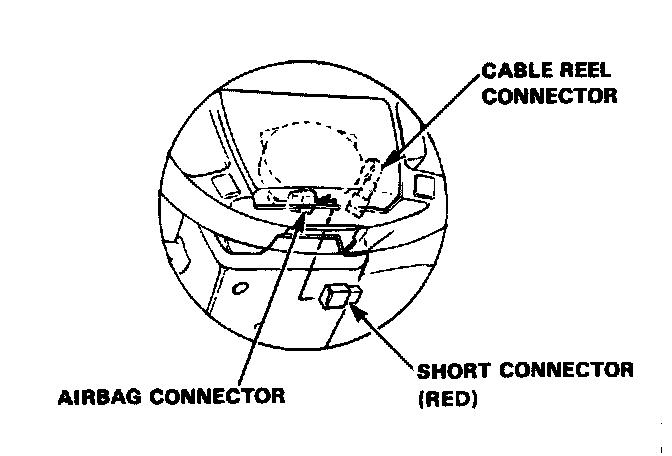
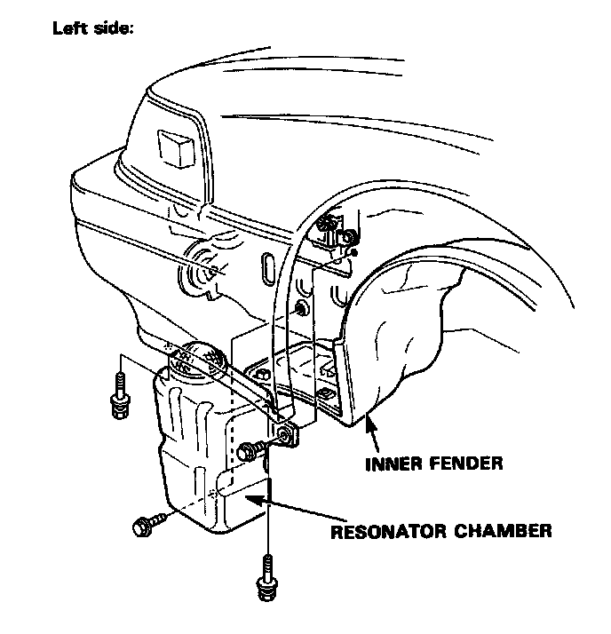
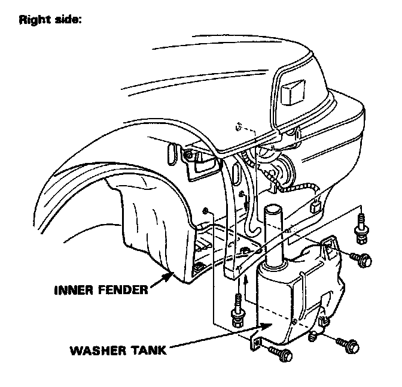
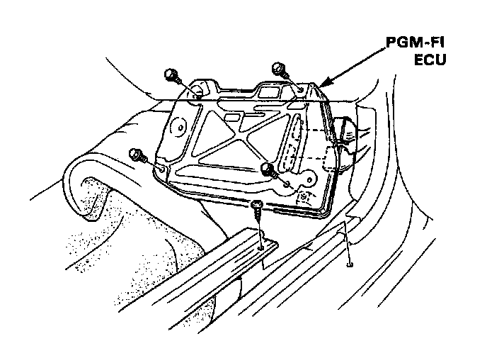
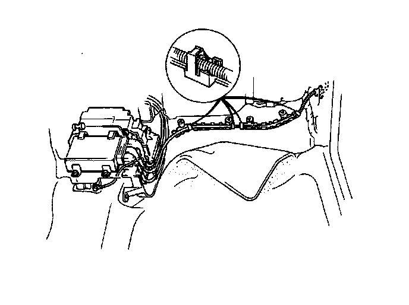
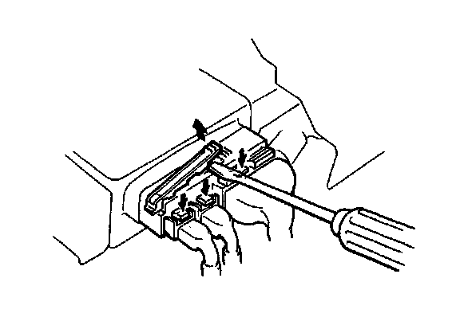
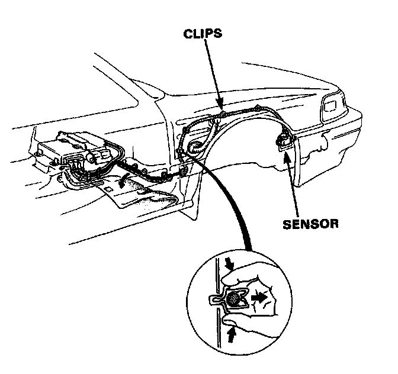

Front Sensors Removal
Front Sensors Removal
CAUTION:
^ Do not damage the sensor wiring.
^ Do not install used SRS parts from another car, When repairing: use only new SRS parts.
^ Carefully inspect the front sensors for signs of being dropped or improperly handled, such as dents, cracks or deformation.
1.Disconnect both the negative cable and positive cable from the battery.
2. Remove the maintenance lid A below the airbag, then remove the short connector.

Short Connector Location
3. Disconnect the connector between the airbag and cable reel.
4. Connect the short connector to the airbag side of the connector.

Short Connector Installed
5. Remove the left and right front inner fenders. From the left side, remove the resonator chamber, and from the right side remove the washer tank and receiver tank.

Left Side

Right Side
6. Pull back the carpeting and remove the PGM-FI ECU.

PGM-FI ECU View
7. Unclip the sensor harness from the holders.

Sensor Harness View
8. Disconnect the connectors from the SRS unit. The connectors are double-locked. To remove them first lift the connector lid with a thin screwdriver, then press the connector tab down and pull the connector out.

Removing The SRS Unit Connectors
CAUTION:
- Avoid breaking the double-locked connectors.
- Do not disassemble or tamper.
- No seviceable parts inside.
- Store SRS parts in a clean dry area.

Removing The Sensor
9. Remove the sensor mounting bolts, and remove the sensor. Disconnect the sensor harness from the clips.